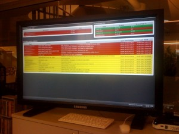
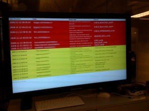

Posted March 21, 2014 by morten
So …my previous post was similar to this, but you most likely dont want to run the salt-master and nagios on the same server, so I had to find a way to let the nagios-server execute its plugins on hosts via the salt-master. This can be done using the python client api and saltstacks own peer communication system.
First of all, read this : http://docs.saltstack.com/ref/peer.html
Then check out my wrapper here : https://github.com/mortis1337/nagios-plugins/blob/master/check_by_saltpeer.py
Yay! Now you can throw away NRPE forever and stop using ssh-keys for the nagiosuser if you are doing that allready.
Nagiosplugins over zmq? I like it 
Tags: monitoring, nagios, nrpe, salt, saltstack, zmq
Posted November 26, 2013 by morten
I’m so sick of maintaining NRPE-config on my servers, and I dont really want root-sshkeys all over the place. Recently I discovered saltstack and started to play with it a bit. I came up with the idea of running Nagios(or Icinga) on the same server as my salt-master and so I created a little wrapper that lets me run nagios-checks via saltstack.
Here’s how it works.
This is my little wrapper-script written in python: https://github.com/mortis1337/nagios-plugins/blob/master/check_by_salt.py
The wrapper takes hostname, plugin and a timeoutvalue as arguments:
$ python check_by_salt.py -H examplehost -p “/path/to/existing/nagiosplugin arg1 arg2″ -t 10
The wrapper imports salt and runs commands on minions with cmd.run_all and returns the output and the exitcode.
For this to work as the nagios/icinga user, you will have to configure the client_acl for the user in the salt-master config, so go ahead and edit the master-configfile (default: /etc/salt/master)
Search for “client_acl” in the file and add this :
client_acl:
icinga:
- cmd.*
Yeeaaaap, thats quite the security risk right there, but read up on how to limit what can be done with the cmd-state in salt and atleast it will be safer than using ssh-keys
check_by_salt in combination with https://github.com/mortis1337/nagios-plugins/blob/master/check_disk_generic.py will instantly give you monitoring of all your disks with no clientside-configuration.
Use it if you like it and feel free to improve it.
Tags: icinga, monitoring, nagios, salt, saltstack
Posted September 17, 2012 by morten
So I got myself a new bodyscale recently. Ofcourse it had to be something of a gadget so I went for this Withings BodyScale. Withings allready has a nice webpage with graphs and stuff and also a couple of really nice iphone/ipad apps for it. The fact that it is integrated with other services like Runkeeper and such, made me think about if they had an API i could query. And it had. Also a quick search for “python withings api” gave some results with examples on how to use it.
I came across this thing : https://github.com/mote/python-withings …and then it was pretty much just about writing a bit of nagios-logic around it to make it into a plugin.
The first result is here: https://github.com/mortis1337/check_wife
The script takes a userid, an apikey and a name as arguments.
$ ./check_wife.py -u 1111111 -k xxxxxxxxxxxxx -n Your(or your wife’s;)name
WARNING: <yourname>’s overweight. Size: <yoursize> – Weight: <yourweight> BMI: <yourbmi>
The script will give a WARNING whenever the BMI-value is about 25 or below 18,5.
Add this to your nagios-config and your operators can come point and laugh at you whenever a WARNING occurs
( yes, the “wife”-part is a joke…. go monitor your own weight;) )
Tags: api, bodyscale, nagios, plugins, python, wife, withings
Posted May 30, 2011 by morten
If you need gzip support in your nagios check_http plugin, here’s what you need to do.
First of all, fetch the latest version (1.4.15) of the nagios-plugins :
http://sourceforge.net/projects/nagiosplug/files/nagiosplug/1.4.15/
tar xzfv the downloaded file somewhere and enter the nagios-plugins-1.4.15/plugins directory…
Here you’ll find the check_http.c sourcefile which needs to be patched.
You can find the patch here :
http://sourceforge.net/tracker/index.php?func=detail&aid=3294169&group_id=29880&atid=397599
patch the sourcefile with the patch command : patch check_http.c checkhttpgzipdeflate.patch
Go down one directory and run ./configure && make
You’ll have a freshly compiled check_http plugin with gzip support in the plugins-directory.
Copy it to your nagios-plugins directory or wherever you keep maintained versions.
Tags: 1.4.15, check_http, gzip, nagios
Posted February 10, 2011 by MrBerry
Im just writing up this post because the dellomsa packages arent working with the new Debian Squeeze 6.0.
I had problems with the omreport command not giving me info of ex memory/psu/cpu. (omreport chassis info said No sensors found etc)
I used some hours to try to get it working with a newer dellomsa but that didnt work either.
Then i found some official Dell Ubuntu packages, which i found working excellent on Debian Squeeze as well:
dpkg -P dellomsa #Make sure dellomsa isnt installed.
echo 'deb http://linux.dell.com/repo/community/deb/latest /' | sudo tee -a /etc/apt/sources.list.d/linux.dell.com.sources.list
apt-get update
apt-get install srvadmin-base smbios-utils
You will also need the libsmbios2_2.2.13-0ubuntu4_amd64.deb from Ubuntu Lucid to get smbios stuff working.
dpkg -i libsmbios2_2.2.13-0ubuntu4_amd64.deb
/etc/init.d/dataeng start #if this starts, omreport works!
Now you have the newer Debian Squeeze Dell stuff working.
We have deployed our hwmonitoring of our Dell servers with check_openmanage and Nagios
Read more about the check_openmanage on the check_openmanage site (this is a great plugin btw!)
Resources:
http://folk.uio.no/trondham/software/check_openmanage.html
http://linux.dell.com/repo/community/deb/latest/
Tags: debian, dell, dellomsa, monitoring, nagios, squeeze
Posted April 28, 2010 by morten
The old dashboard we used earlier had a couple of issues. It showed all SOFT nagios states and it also listed every service pr host that was down. Since it’s pretty obvious that a service is down on a host that is down, we wanted to change that. Instead of continuing the rather hard work of changing the dirty status.dat parsing, we just dropped that project and checked out Merlin. Once installed and configured correctly, merlin will enable an eventbrokermodule in the nagiosconfig and update merlins mysql database via the eventbroker. The database contains all hosts and statuses state changes and so on, so this is what we ended up with : (Pic of our current dashboard in our office)

This dashboard lists only hosts that are down and not acknowledged in nagios in its upper left corner. Then there’s a little tactical overview in the upper right corner (this will have more info shortly) and finally all unhandled serviceproblem listed below. Exactly what we want.
The bottom “toolbar” is transparent and has a countdown timer for page refresh and shows the current time.
Thanks again to Jonas, for the design!
You can download the files from git : https://github.com/mortis1337/nagios-dashboard
Just change the login info in merlin.php to match your merlin database and it should run smoothly.
Note: The dashboard needs firefox 3.6.
Enjoy.
http://dingleberry.me/2010/04/our-new-dashboard/
Tags: dashboard, merlin, nagios
Posted March 9, 2010 by morten
The most important part about this is ….dont use it too often, but it CAN make sense on really critical events, like warnings/criticals on partitionspace. For instance, if your mysql server is running out of space on /var/lib/mysql and your operationsteam didnt see the WARNING/CRITICAL notification from Nagios, it might be a good idea to have the bug created in Jira to make it even more visible.
Here’s how you do it.
First of all, be sure to have eventhandlers enabled in Nagios.
Configure your commands.cfg file to have something similar to this :
define command{
command_name jira_eventhandler
command_line $USER1$/jira_eventhandler -a morten -s $SERVICESTATE$ -t $SERVICESTATETYPE$ -A $SERVICEATTEMPT$ -H $HOSTNAME$ -S $SERVICEDESC$
}
Configure your services.cfg to have something similar to this :
define service{
use generic-service
host_name myhost
service_description CHECK_DISK_ROOT
is_volatile 0
max_check_attempts 3
normal_check_interval 10
retry_check_interval 1
contact_groups linux-admins
notification_period 24x7
notification_options c,w,r
check_command check_remote_disk_nagios!10%!5%!/
process_perf_data 1
event_handler jira_eventhandler
flap_detection_enabled 0
}
And be sure to have the jira_eventhandler script in place. You can download mine here : jira_eventhandler
Tags: eventhandler, jira, monitoring, nagios
Posted November 12, 2009 by MrBerry
We had an idea of putting up an operations monitoring screen in our workplace for more effecient discover alerts from nagios.
We found a php nagios dash app which parses status.dat (Nagios Dashboard – PHP)
We modified this to only show criticals/warnings, made a ajax interface for refreshing/showing the data, and modified the css a bit (Thanks Jonas!)
Here is the modified version:
dash.tar
To install just extract this on your nagios server and edit the $file in nagios_get.php to your status.dat file of your nagios
Here is a demo of the dash in real surroundings:

Tags: dashboard, monitoring, nagios
Posted October 22, 2009 by morten
I came across a post on the Cacti-forums where a guy has posted a perl script for finding the F5 BigIP TMM Utilization via the commandline, so I modified it a bit, and now it works as a nagios-plugin.
I’ve also added performancedata to it, for usage with graphing tools like for instance pnp4nagios.
Here’s the complete modified script : check_tmm_utilization
Then you can simply add 4 lines to your commands.cfg file in Nagios.
define command{
command_name check_tmm_utilization
command_line $USER1$/check_tmm_utilization $HOSTADDRESS$ yoursnmpcommunitystring $ARG1$ $ARG2$
}
…and finally update services with something like :
define service{
use generic-service
host_name bigip-box
service_description CHECK_TMM_UTILIZATION
is_volatile 0
max_check_attempts 3
normal_check_interval 5
retry_check_interval 1
contact_groups linux-admins
notification_period 24x7
notification_options c,w,r
process_perf_data 1
check_command check_tmm_utilization!75!90
}
check config and restart
woohooo
Tags: bigip, f5, nagios, snmp, tmm
Posted October 12, 2009 by morten
A friend pointed me to this site a few days ago. A nice little nagios plugin to alert you when your dell support contracts are about to run out.
http://ingvar.blog.linpro.no/2009/09/23/todays-sysadmin-tip-monitoring-dell-support-contracts/
Also check my comment to the post. You might want to add the following lines to the script :
if [ -z $days ]; then
echo “UNKNOWN: Could not retrieve info from support.dell.com.”
exit 3
fi
Tags: dell, nagios


{kind=link}
{kind=link}